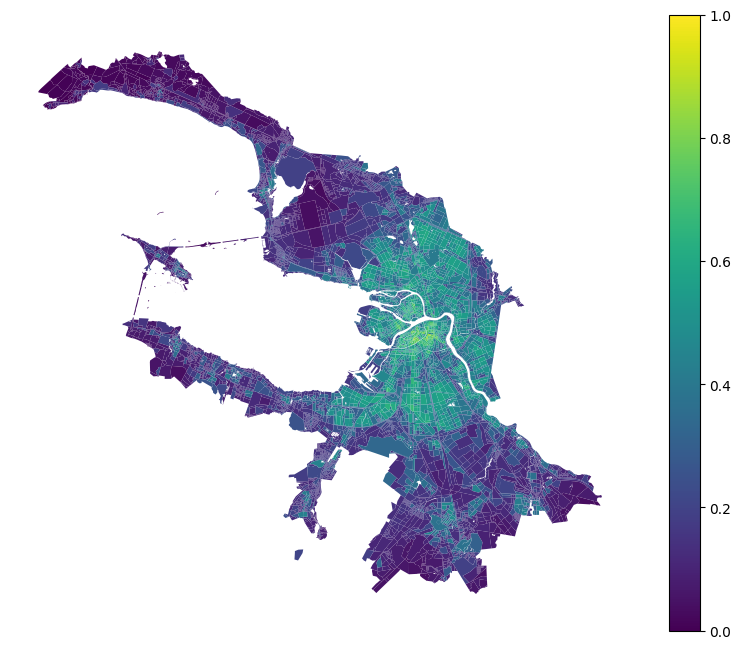

Services centrality
[4]:
import pandas as pd
blocks_gdf = pd.read_pickle('./../../data/saint_petersburg/blocks.pickle')
blocks_gdf.head(3)
[4]:
| geometry | site_area | residential | business | recreation | industrial | transport | special | agriculture | land_use | ... | capacity_prison | count_prison | capacity_landfill | count_landfill | capacity_plant_nursery | count_plant_nursery | capacity_greenhouse_complex | count_greenhouse_complex | capacity_warehouse | count_warehouse | |
|---|---|---|---|---|---|---|---|---|---|---|---|---|---|---|---|---|---|---|---|---|---|
| 0 | POLYGON ((349424.859 6631180.891, 349424.751 6... | 0.032316 | 0.000 | 0.0 | 0.000000 | 0.0 | 1.000000 | 0.0 | 0.000000 | LandUse.TRANSPORT | ... | 0.0 | 0.0 | 0.0 | 0.0 | 0.0 | 0.0 | 0.0 | 0.0 | 0.0 | 0.0 |
| 1 | POLYGON ((352083.617 6633950.146, 352240.448 6... | 137101.088247 | 0.099 | 0.0 | 0.079912 | 0.0 | 0.401072 | 0.0 | 0.417018 | LandUse.AGRICULTURE | ... | 0.0 | 0.0 | 0.0 | 0.0 | 0.0 | 0.0 | 0.0 | 0.0 | 0.0 | 0.0 |
| 2 | POLYGON ((346700.642 6618453.176, 346681.107 6... | 95239.084434 | 1.000 | 0.0 | 0.000000 | 0.0 | 0.000000 | 0.0 | 0.000000 | LandUse.RESIDENTIAL | ... | 0.0 | 0.0 | 0.0 | 0.0 | 0.0 | 0.0 | 0.0 | 0.0 | 0.0 | 0.0 |
3 rows × 137 columns
[5]:
accessibility_matrix = pd.read_pickle('./../../data/saint_petersburg/accessibility_matrix_intermodal.pickle')
accessibility_matrix.head()
/home/vasilstar/masterplanning/.venv/lib/python3.10/site-packages/pandas/io/formats/format.py:1458: RuntimeWarning: overflow encountered in cast
has_large_values = (abs_vals > 1e6).any()
[5]:
| 0 | 1 | 2 | 3 | 4 | 5 | 6 | 7 | 8 | 9 | ... | 9523 | 9524 | 9525 | 9526 | 9527 | 9528 | 9529 | 9530 | 9531 | 9532 | |
|---|---|---|---|---|---|---|---|---|---|---|---|---|---|---|---|---|---|---|---|---|---|
| 0 | 0.0000 | 58.15625 | 74.187500 | 76.937500 | 66.8125 | 80.5000 | 92.18750 | 66.56250 | 65.68750 | 106.875 | ... | 70.0000 | 72.1875 | 72.0000 | 73.3125 | 73.2500 | 74.0000 | 75.5000 | 83.1875 | 75.000 | 73.2500 |
| 1 | 56.2500 | 0.00000 | 99.687500 | 102.375000 | 88.1250 | 76.1250 | 113.43750 | 89.43750 | 88.56250 | 96.250 | ... | 65.6250 | 67.7500 | 67.6250 | 68.9375 | 68.8750 | 69.6250 | 71.1250 | 78.8125 | 70.625 | 68.8750 |
| 2 | 74.5000 | 96.50000 | 0.000000 | 5.347656 | 74.0000 | 118.8125 | 92.06250 | 64.43750 | 63.56250 | 134.500 | ... | 108.3125 | 110.4375 | 110.3750 | 111.6875 | 111.5625 | 112.3750 | 113.8125 | 121.5000 | 113.375 | 111.5625 |
| 3 | 77.2500 | 99.25000 | 5.347656 | 0.000000 | 76.7500 | 121.5625 | 90.12500 | 67.18750 | 66.31250 | 137.250 | ... | 111.0625 | 113.1875 | 113.0625 | 114.3750 | 114.3125 | 115.0625 | 116.5625 | 124.2500 | 116.125 | 114.3125 |
| 4 | 70.1875 | 90.56250 | 82.375000 | 85.125000 | 0.0000 | 110.5000 | 35.53125 | 45.15625 | 44.28125 | 89.875 | ... | 100.0000 | 102.1250 | 102.0000 | 103.3125 | 103.2500 | 104.0000 | 105.5000 | 113.1875 | 105.000 | 103.2500 |
5 rows × 9533 columns
[6]:
from blocksnet.analysis.centrality import services_centrality
centrality_df = services_centrality(accessibility_matrix, blocks_gdf)
centrality_df.head()
2025-09-19 17:15:33.127 | INFO | blocksnet.analysis.diversity.shannon.core:shannon_diversity:23 - Calculating Shannon diversity index
100%|██████████| 9533/9533 [00:05<00:00, 1903.23it/s]
[6]:
| connectivity | diversity | density | services_centrality | |
|---|---|---|---|---|
| 0 | 0.009721 | 0.000000 | 0.000000 | 0.170247 |
| 1 | 0.009816 | 0.693147 | 0.000015 | 0.256964 |
| 2 | 0.007360 | 0.000000 | 0.000000 | 0.099913 |
| 3 | 0.007220 | 0.000000 | 0.000000 | 0.095758 |
| 4 | 0.008065 | 1.039721 | 0.000024 | 0.247039 |
[8]:
blocks_gdf[['geometry']].join(centrality_df).plot('services_centrality', legend=True, figsize=(10, 8), vmin=0, vmax=1).set_axis_off()
